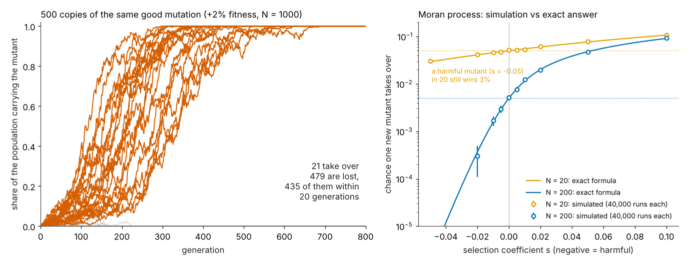

The “So what?” wing · Room 1 of 3
So what?
A friend of the museum asked the fair question: does any of this matter outside the screen? This wing is our answer. It shows places where people have learned something real from artificial life, or used its methods to do real work. Most of the examples are not ours and most are not Lenia. Where our own rooms touch them, we link back and say how strong the link is.
We label every example with one of three words, and we try to be strict about them:
- Evidence The artificial system is an instance of the thing studied, or it was tested against the real thing, so its results count as evidence about the real world (usually about a general principle, never about one species).
- Tool Artificial-life methods are used as working instruments in another field: to plan, to design, to search. The tool can be good without telling us anything about life.
- Analogy A resemblance that helps you think and proves nothing. Most of our own Lenia results are analogies when you hold them up against biology, and we say so.
The wing has three rooms: evolution (here), how bodies build themselves, and crowds, contagion and machines that invent. Three small demos were made for it, and their numbers are in the ledger like everything else.
Fit, or just lucky?

What you see. Twenty-one of the 500 good mutations take over. The other 479 die out, and 435 of those are gone within 20 generations, long before selection has had time to help. On the right, in a population of 20 the curve is almost flat: a harmful mutation does nearly as well as a helpful one.
What the ledger says. Simulation and exact formula agree in all 20 conditions, and a 5%-harmful mutant takes over 3.0% of the time in a population of 20 while a 2%-helpful one manages 2.0% in a population of 200 C112observed.
Evidence The textbook says this, and so did our soup
None of this is new. Haldane worked out in 1927 that a new mutation with a small advantage s survives with a chance of only about 2s; Kimura gave the general formula in 1962; Ohta argued in 1973 that in small populations slightly harmful mutations can spread by chance. We ran the textbook models to show the size of the effect, not to discover it. The real-world consequences are large: small populations (endangered species, a tumour's first cells, a pathogen passing through one host) cannot be relied on to keep their best variants, and one experiment that ends in a takeover does not show that the winner was better.
Our link: in the evolution soup we replayed twelve mutant genomes at six new places each. The first trial did not predict the replays C099observed, and one genome's fate varied more by where it landed than genomes differed from each other C101observed. That is this lesson, found again in a stranger world. It is evidence about the soup, and only an echo of the theory.
Haldane 1927, Kimura 1962, Moran 1958, Ohta 1973, Patwa & Wahl 2008 (review). Full references below.
Digital organisms
Evidence Avida: how a complex feature can evolve
In Avida, organisms are small computer programs that copy themselves, mutate and compete for processor time. Nothing in them models chemistry, but they really do replicate, vary and get selected, so Avida is a case of evolution, not a picture of it. Lenski, Ofria, Pennock and Adami (2003) used it to ask an old question: can random mutation and selection build a complex feature? Populations often evolved the most complex logic function the experiment rewarded (EQU, “equals”). It evolved by building on simpler functions, but only when those simpler functions were rewarded too; no single route was necessary; and some steps on the way were mutations that were harmful when they first appeared.
Wilke and colleagues (2001) used Avida to test a prediction of quasispecies theory, the “survival of the flattest”: when mutation rates are high, a slower replicator that sits on a flat, mutation-tolerant part of the fitness landscape can beat a faster one on a sharp peak. It did, in every one of their 12 test pairs.
anything about the particular molecules of real cells. Its findings are about evolution as a process, which is exactly what makes them general.
Our link: our replicator room is a much cruder cousin. Its “division uncontrolled” genome invades well-behaved tissue C092observed: selection on copying speed, the same pressure Avida organisms feel.
Lenski et al. 2003; Wilke et al. 2001; Ofria & Wilke 2004 (the platform); Adami 2006 (review).
Tool Who else evolves things in Lenia
Lenia's creator, Bert Chan, built large Lenia worlds where creatures copy themselves and carry their own rules (2023). His runs went through a burst of diversity and then ended in extinction or in fast-expanding patterns taking over everything, the same runaway our replicator room sees. Plantec, Chan and colleagues made Flow-Lenia (Artificial Life, 2025), the system our evolution soup is built on, so that many species can share one world; they measure “evolutionary activity” and find it falls as mutation rises. Others use curiosity-driven search to map whole Flow-Lenia ecosystems (Michel et al. 2025), quality-diversity search to breed creatures (Leniabreeder, 2024), or vision-language models to judge worlds (ASAL, 2024). The question they share is how to get evolution that never runs out of new things.
The questions a population geneticist would ask first, how much of a mutant's success is luck and how it compares with a neutral marker, we did not find asked of Lenia in an arXiv search, though Avida researchers ask them routinely. Our soup now has that control: against a neutral marker at the same places, the verdicts on single mutants change C118observed.
Chan 2023; Plantec et al. 2025; Michel et al. 2025; Faldor & Cully 2024; Kumar et al. 2024.
Evidence Replaying the tape, in real bacteria
Our soup replays are a cheap version of an experiment biologists have done with real cells. In Lenski's long-term evolution experiment, twelve identical populations of E. coli have evolved since 1988 in a medium with citrate they could not eat. Only one population learned to use it, after about 31,500 generations. Blount, Borland and Lenski (2008) replayed evolution from frozen samples of that population's history: clones from later generations were more likely to evolve the trick again, so earlier, invisible “potentiating” mutations had set it up. History mattered.
that artificial life was needed. The point is that the replay method, which costs a computer nothing, is the same logic biologists use to separate luck from necessity.
Blount, Borland & Lenski 2008.
Cancer is evolution
Evidence Tumours evolve, and treatment can use that
Nowell proposed in 1976 that a tumour is a population of cells under natural selection: mutant clones arise, compete and take over. That view is now mainstream (Greaves & Maley 2012). It has practical teeth. Standard chemotherapy kills the sensitive cells and leaves the resistant ones with no competitors. Adaptive therapy (Gatenby and colleagues 2009) instead doses on and off to keep sensitive cells around to hold the resistant ones back. In a small pilot trial in prostate cancer (Zhang et al. 2017), 10 of 11 patients kept their tumour burden oscillating, with median time to progression of at least 27 months against about 16.5 months reported for standard dosing, on 47% of the usual drug. The trial was small and not randomised, and the comparison was with published and contemporaneous patients, so larger trials are needed.
Our link is an Analogy only. In the replicator room, GenomeLenia cells carry a genome from “division well” to “division uncontrolled”, and selection pushes it upward until it levels off near 0.7 C111observed. That stall looks like a tumour reaching a limit set by its own crowding, and it is tempting to say so. But our cells have no tissue, no immune system, no drug and no blood supply. The room shows how selection on copying speed behaves in one invented world, nothing about any cancer.
We also built a toy of adaptive therapy in the same room: a drug that hits fast-dividing matter, given constantly or on and off. In our toy the pauses mostly helped the tumour C120observed, because nothing in it makes resistant cells lose to sensitive ones in a crowd. When we added that cost, the on-off schedule kept tumours small and drug-sensitive, but constant dosing still did better, because the resistant leftovers in our toy never regrew C124observed. Those are the two assumptions the real strategy depends on, which is the useful lesson; it is not evidence about patients.
Nowell 1976; Greaves & Maley 2012; Gatenby et al. 2009; Zhang et al. 2017.
Minimal models of why evolution works
Tool Wolfram's evolving cellular automata
In 2024 Stephen Wolfram published a deliberately minimal model: take a simple cellular automaton rule, make random point mutations to it, and keep each mutation that does not shorten how long the pattern lives before dying out. The rules that evolve are intricate, and progress comes in long plateaus broken by sudden jumps, often from a single mutation. He uses it to discuss why blind selection finds such mechanisms at all, and ties the answer to his idea of computational irreducibility.
that biology works this way. These are essays, not peer-reviewed papers, and the model is a thought experiment you can run. Its value is that every step is inspectable.
Our link: in our long GenomeLenia runs the climb slows and stalls too. Whether our plateaus share a cause with Wolfram's is untested.
Wolfram, “Why does biological evolution work?” (3 May 2024) and “Foundations of biological evolution: more results & more surprises” (5 December 2024).
Sources
- Wing notes and the drift models (Moran runs, Wright-Fisher fates)
- References, section “The ‘So what?’ wing”, with links and what was read for each source
- Haldane, J. B. S. (1927) Math. Proc. Camb. Phil. Soc. 23:838 · Kimura, M. (1962) Genetics 47:713 · Moran, P. A. P. (1958) Math. Proc. Camb. Phil. Soc. 54:60 · Ohta, T. (1973) Nature 246:96 · Patwa & Wahl (2008) J. R. Soc. Interface 5:1279
- Lenski, Ofria, Pennock & Adami (2003) Nature 423:139 · Wilke et al. (2001) Nature 412:331 · Ofria & Wilke (2004) Artificial Life 10:191 · Adami (2006) Nat. Rev. Genet. 7:109
- Chan (2023) arXiv:2304.05639 · Plantec et al. (2025) Artificial Life 31:228 (arXiv:2506.08569) · Michel et al. (2025) arXiv:2505.15998 · Faldor & Cully (2024) arXiv:2406.04235
- Blount, Borland & Lenski (2008) PNAS 105:7899
- Nowell (1976) Science 194:23 · Greaves & Maley (2012) Nature 481:306 · Gatenby et al. (2009) Cancer Res. 69:4894 · Zhang et al. (2017) Nat. Commun. 8:1816
- Wolfram (2024) Why does biological evolution work?